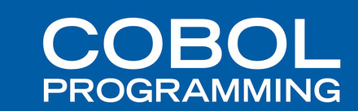
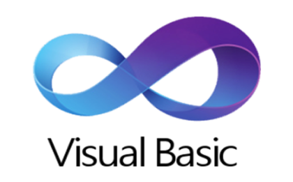
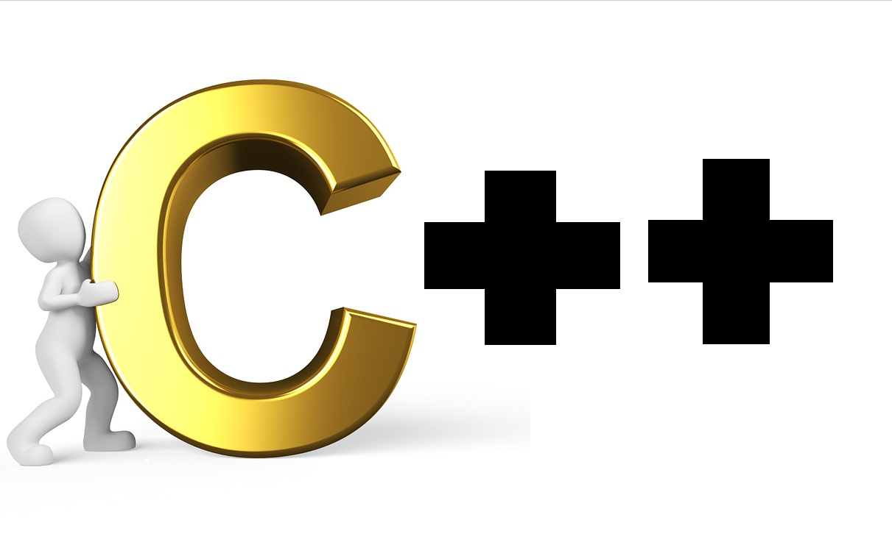

La historia de los lenguajes de programación
El lenguaje de programación es definido como un idioma artificial, formado por símbolos y reglas sintácticas y semánticas, para expresar computaciones y que pueden usarse para crear programas que controlen el comportamiento de una máquina, expresar algoritmos con precisión, o como modo de comunicación humana.
1-Fortran (1957)
FORmulaTRANslation es el lenguaje de programación más antiguo y que continúa en uso. Creada por John Backus, esta herramienta fue desarrollada para la computación científica de alto nivel, matemáticas y estadísticas.
A día de hoy, este lenguaje se sigue usando en la industria automovilística, aeroespacial, gubernamental y la investigación. Por ejemplo, es muy útil para el pronóstico de los servicios meteorológicos.
2-Cobol (1959)

El Common Business Oriented Language está detrás de la mayoría de los sistemas de transacciones de negocio de los procesos de las tarjetas de crédito, ATMs (Modo de Transferencia Asíncrona), telefonía, sistemas hospitalarios, gobierno, sistemas automatizados y señales de tráfico
El desarrollo de Cobol, creado por Grace Murray Hopper, muestra un lenguaje familiar y uniforme para transacciones empresariales. Por ejemplo, lo usan en el servicio postal estadounidense.
3-Basic (1964)

Creado por estudiantes de Dartmouth College, el denominado Beginners All Purpose Symbolic Instruction Code fue diseñado como un lenguaje simplificado para aquellos que no tenían como base fuertes conocimientos técnicos o matemáticos. Una versión modificada, escrita por Bill Gates y Paul Allen, llegó a ser el primer producto de Microsoft. Fue vendido al M.I.T.S. para el Altair.
En 1977, fue integrado en el Apple II para su arranque.
4-C (1969)

Este lenguaje fue desarrollado entre 1969 y 1973 por Dennis Ritchie para los laboratorios Bell Telephone para usarlos en el sistema Unix. Se le llamó “C” porque sus características derivaban de un lenguaje anterior llamado “B”.
C llegó a ser tan poderoso que la mayoría del núcleo de Unix fue reescrito con él. De hecho, hoy en día, Linux está todavía basado en C.
5-Pascal (1970)
El lenguaje se llamó así en honor de Blaise Pascal, el inventor de las calculadoras matemáticas, aunque su creador se llamaba Niklaus Wirth, y lo desarrolló como una herramienta de enseñanza y formación aunque tiene un uso meramente comercial. Este lenguaje se usa en Skype.
6-C++ (1983)

En los laboratorios Bells, Bjarne Stroustrup modificó el lenguaje C al C++, creando lo que muchos consideran el lenguaje de programación más popular que ha existido nunca. Además, ha sido listado en lo alto de los top ten de los lenguajes de programación desde 1986 y archivado en el Hall of Fame en 2003. Hoy en día es usado por Firefox, Office y Adobe PDF Reader.
7-Perl (1987)
Larry Wall, un programador Unix, creó Perl después de intentar extraer datos de un informe y darse cuenta que Unix no podía llevar a cabo las operaciones que él necesitaba. Practical Extraction Report Language fue descrito por su inventor como un lenguaje que “consigue que hagas tu trabajo”. Actualmente es usado por Craigslist.
8-Python (1991)

Monty Python sirvió de inspiración para nombrar este lenguaje. Guido Van Rossum lo creó para solucionar problemas en el lenguaje ABC y continúa utilizándose para tal fin. Hoy en día es usado por la NASA, Google y YouTube.
9-Ruby (1993)
Fue creado por Yukihiro Matsumoto, conocido como Matz, y utilizando partes de sus lenguajes de programación favoritos: Perl, Smalltalk, Eiffel, Ada y Lisp. Ahora es usado por Basecamp.
10-PHP (1995)

Rasmus Lerdoff desarrolló PHP para reemplazar unos scripts de Perl usados para mantener su web personal. Hoy en día, PHP ha crecido hasta llegar a ser parte de una arquitectura web integrada en 20 millones de websites. Facebook lo usa actualmente.
11-Java (1995)

Un grupo de trabajadores de Sun Microsystems, liderado por James Gosling, creó Java para arrancar los decodificadores de una televisión interactiva. Hoy en día, Java está presente en más de 1.000 millones de PCs de todo el mundo y muchas websites no pueden funcionar sin ella. Fue utilizada en 2004 en la misión de la NASA Mars Rovers.
12-JavaScript (1995)

Java y Javascript no están relacionados y tienen muy diferente semántica, aunque no lo parezca. Javascript fue desarrollada por Brendan Eich, de Netscape, bajo el nombre de Mocha. Tiene influencia del lenguaje C. Hoy en día es usado en servicios como node.js. De él depende AJAX.
13-Ruby On Rails (2005)
Fue extraído por David Heinemeier Hansson de su trabajo en Basecamp, un proyecto dirigido por 37 señales. Hasson lanzó Ruby On Rails, en principio, como código abierto, en 2004, pero no compartió los derechos hasta febrero de 2005. Ahora está en su versión 3.0.7 y tiene más de 1.800 contribuyentes.